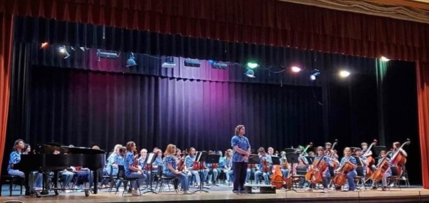
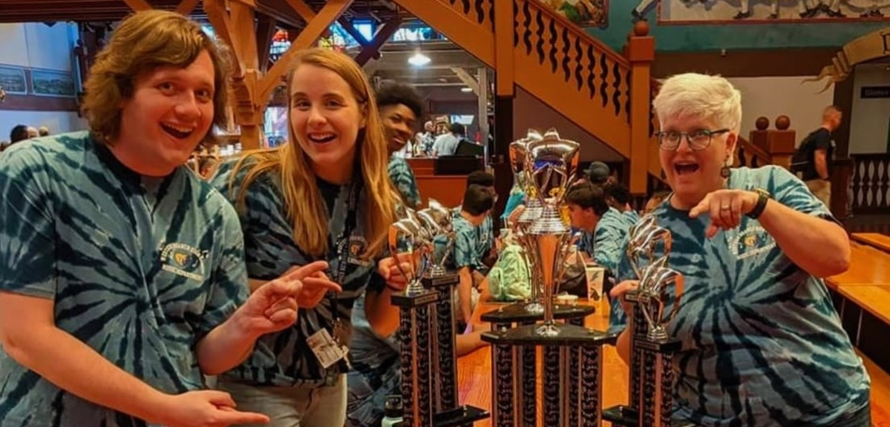

Performance
Carnegie Hall
Western Branch orchestra students have had the opportunity to perform at Carnegie Hall in New York City.
Western Branch Orchestras
A look at our students, performances, activities, and orchestra community.


Watch Our Orchestras
Watch performances and other videos from Western Branch Orchestras on our YouTube channel.
The channel includes orchestra performances and other videos highlighting our student musicians.
Visit our YouTube channel to watch orchestra performances and videos.
Watch on YouTubeLooking Back
Looking back at memorable performances, achievements, and experiences from Western Branch orchestra students.
Performance
Western Branch orchestra students have had the opportunity to perform at Carnegie Hall in New York City.
Achievement
The Western Branch Blue & Gold Orchestra earned Gold recognition at the 2017 Heritage Festival.
Experiences
Orchestra trips provide students with opportunities to perform, learn, travel, and build memories together.
Help Build Our Gallery
Have photos from a concert, trip, performance, or other orchestra activity? WBOPA may feature approved photos on the website.
Photos from both Western Branch High School and Jolliff Middle School orchestra activities are welcome.
Contact WBOPA about submitting photos that are appropriate and approved for public website use.
Contact WBOPA